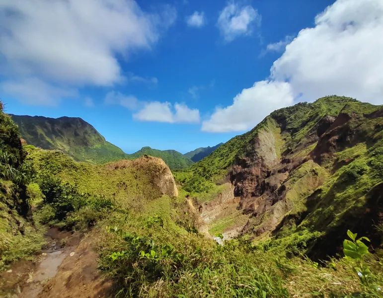
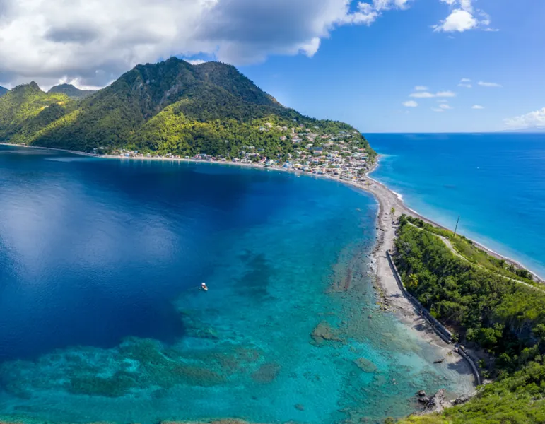

La Dominique, l'île que personne ne connaît et que tout le monde devrait découvrir
La Dominique est mon île coup de cœur absolu. Celle que je propose dans les programmes de mes clients les plus aventureux, celle dont je parle avec des étoiles dans les yeux. Et pourtant, c'est une île que presque personne ne connaît. Quand je dis « la Dominique » à des personnes peu familières avec les Caraïbes, on me répond encore parfois : « Ah, la République dominicaine ? » Non, pas du tout 😅
La Dominique (Commonwealth of Dominica) est une petite île anglophone de 750 km², située entre la Guadeloupe au nord et la Martinique au sud. Couverte à 60 % de forêt tropicale primaire, sillonnée de rivières et de cascades, et traversée de routes sinueuses qui grimpent vers des sommets enveloppés de nuages, c'est une destination idéale pour les voyageurs en quête d'expériences différentes.
Pourquoi la Dominique est-elle si différente des autres îles des Caraïbes ?
Ici, pas de grandes plages de sable blanc. La Dominique a fait le choix d'un tourisme axé sur la nature et l'écologie, et c'est précisément ce qui la rend si précieuse.
Voici mon top 4 des activités à faire lors d'un séjour en Dominique 👇

Le Morne Trois Pitons, cœur du parc national classé à l'UNESCO.
Le Boiling Lake : la randonnée la plus impressionnante des Antilles
Si vous ne faites qu'une chose à la Dominique, que ce soit celle-là. Le Boiling Lake est le deuxième lac d'eau bouillonnante naturelle au monde, une caldera volcanique remplie d'une eau gris-bleue qui bout en permanence, émettant des vapeurs denses dans un paysage lunaire absolument irréel.
La randonnée pour y accéder est exigeante : environ 7 à 8 heures aller-retour, avec un passage par la "Vallée de la Désolation", une plaine sulfureuse parsemée de fumerolles et de mares de boue bouillonnante. C'est physique, intense, et inoubliable.
Conseil de Mégane
Je recommande de faire cette randonnée avec un guide local car le terrain peut être glissant et les conditions météo changent vite. C'est aussi lui qui vous donnera tous les repères pour traverser la Vallée de la Désolation en confiance.
Les sources chaudes de Wotten Waven : le spa naturel de la jungle
À quelques kilomètres de Roseau, la capitale, le village de Wotten Waven est entouré de sources d'eau chaude géothermale naturelles. Plusieurs petits établissements proposent des bains dans des bassins alimentés directement par ces sources, au milieu de la végétation tropicale. L'expérience d'un bain thermal en pleine jungle, sous les étoiles si vous y allez le soir, est simplement magique.
La plongée et le snorkeling : les eaux les plus riches des Caraïbes
La Dominique est considérée par de nombreux plongeurs comme la meilleure destination de plongée des Petites Antilles. Ses eaux sont protégées et les fonds marins reflètent la richesse volcanique de l'île : parois verticales couvertes de coraux, fumerolles sous-marines, épaves, et une biodiversité marine extraordinaire.
Même pour le snorkeling en surface, les côtes de la Dominique réservent de belles surprises, notamment autour de Champagne Reef où des bulles géothermales remontent du fond et réchauffent l'eau autour de vous. Une expérience unique au monde.

Scotts Head, à la pointe sud de l'île, où l'Atlantique rencontre la mer des Caraïbes.
Les cascades : Emerald Pool, Trafalgar Falls, Victoria Falls
La Dominique compte plus de 365 rivières, autant que de jours dans l'année comme aiment le dire les locaux. L'Emerald Pool est la plus accessible : une piscine naturelle d'un vert émeraude saisissant au pied d'une cascade, entourée de forêt tropicale. Les Trafalgar Falls sont les plus spectaculaires, avec deux chutes jumelles qui se rejoignent dans un bassin où il fait bon se baigner. La Victoria Falls, plus confidentielle, récompense les randonneurs qui acceptent de marcher 2h aller pour la rejoindre.
Conseil de Mégane
La Dominique se combine idéalement avec un séjour en Guadeloupe ou en Martinique. Un ferry depuis Pointe-à-Pitre et vous y êtes en moins de 2h30. Je construis souvent des itinéraires Guadeloupe et Dominique de 15 à 20 jours qui offrent un contraste saisissant entre les deux îles.
Infos pratiques pour visiter la Dominique
Des ferries (L'Express des Îles) relient Pointe-à-Pitre à Roseau en environ 2h30. La langue officielle est l'anglais mais un créole français est largement parlé. La monnaie est le dollar des Caraïbes orientales (XCD), prévoyez du cash local. La meilleure période pour y aller s'étend de décembre à avril pour limiter les pluies. Comptez minimum 4 nuits sur place, idéalement 6 nuits pour une immersion complète.
Vous souhaitez que j'organise un séjour en Dominique ou un circuit combinant plusieurs îles ? Découvrez mes services de travel planning aux Antilles.